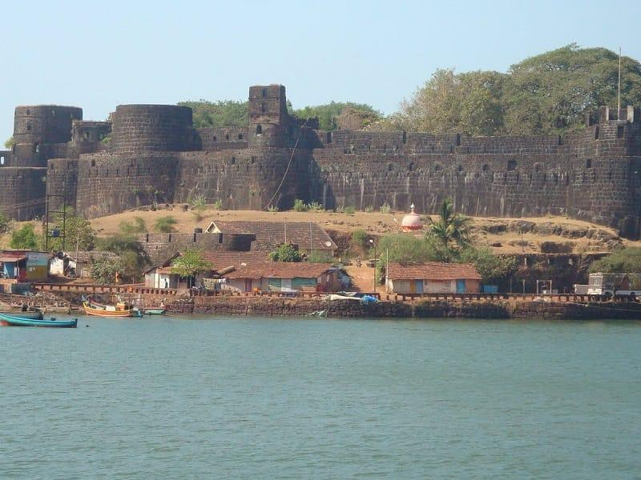
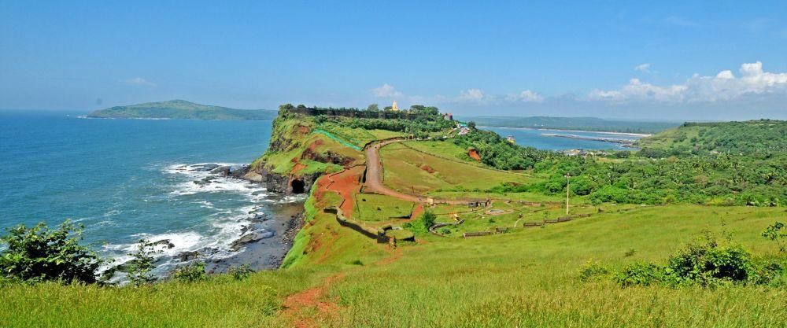
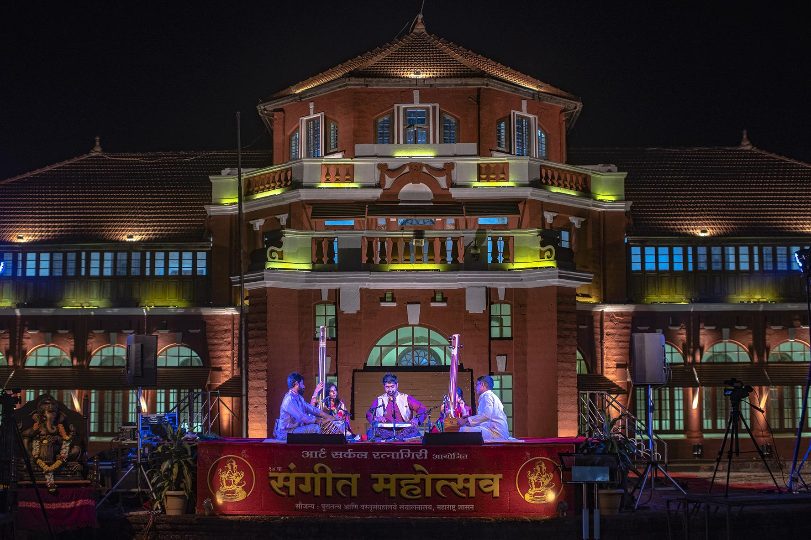
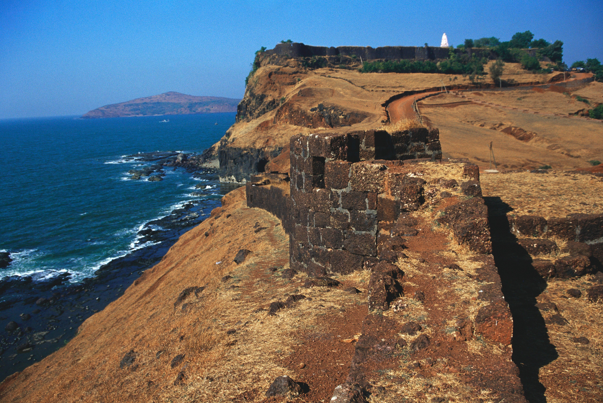
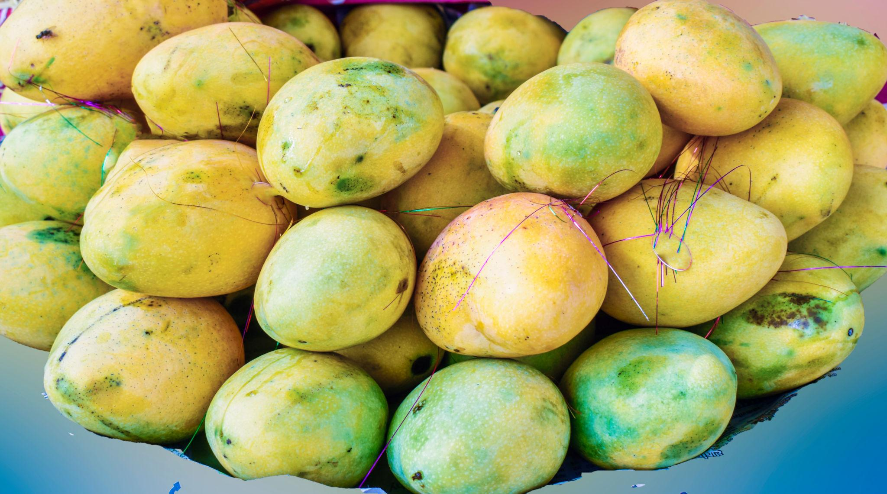
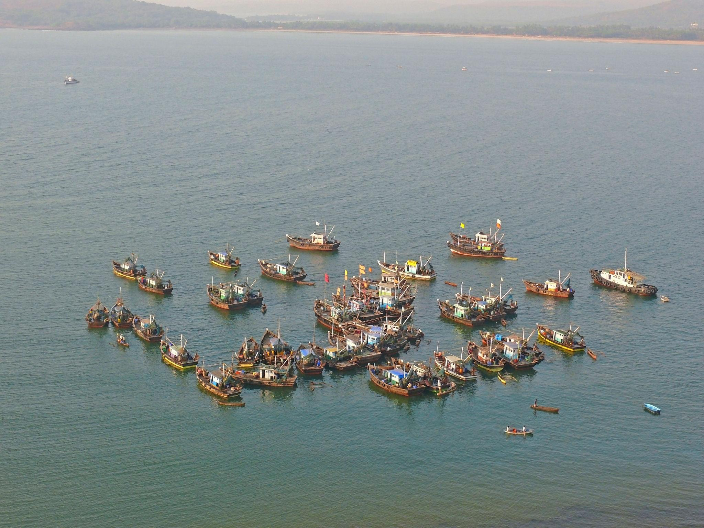
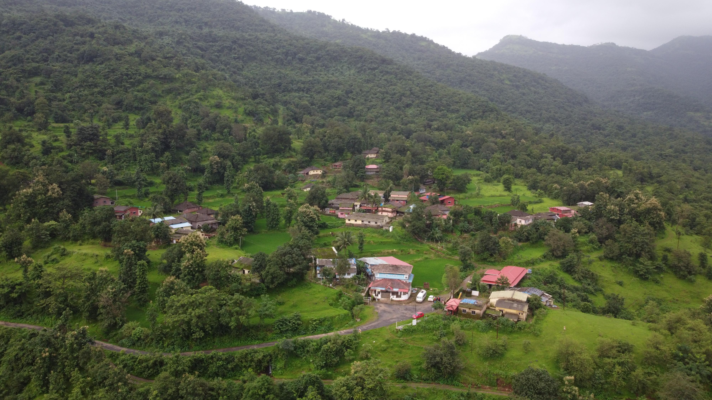
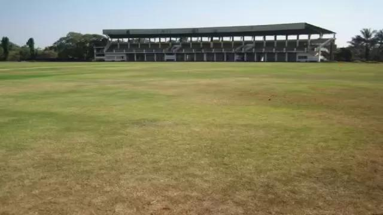

About

Ratnagiri is a picturesque port city and district on Maharashtra’s Konkan coast, nestled between the majestic Western Ghats and the Arabian Sea. It is globally renowned for its pristine beaches, world-famous Alphonso mangoes, rich freedom-struggle history, and a vibrant cultural tapestry rooted deeply in traditional Maharashtrian heritage. Ratnagiri is a coastal district headquarter in Maharashtra covering a long stretch of the Konkan coastline. Bounded by the Sahyadri ranges in the east and the Arabian Sea in the west, it is known for its warm, welcoming Konkani people and serene, traditional tiled-roof settlements.
- Location: Ratnagiri is located in the southern part of the Konkan region. It shares its northern border with Raigad district, its eastern border with Satara, Sangli, and Kolhapur districts (separated by the Sahyadri mountains), and its southern border with Sindhudurg district.
- Famous as: Ratnagiri is globally famous for its premium Alphonso Mangoes (Hapus), the white-sand beaches and Swayambhu Ganpati Temple of Ganpatipule, the historic Ratnadurg Fort, and as the birthplace of the great freedom fighter Lokmanya Tilak.
History

The region has been settled for over 12,000 years and has been ruled by various empires, including the Mauryas, Chalukyas, and the Sultanate of Bijapur. In 1670, Chhatrapati Shivaji Maharaj reconstructed the Ratnadurg Fort, making it a vital Maratha naval stronghold. It is also famously known as the birthplace of the Indian freedom fighter Lokmanya Bal Gangadhar Tilak and served as a place of exile for King Thibaw of Burma during the British Raj.
- Ratnagiri was an ancient sea trade hub and a Maratha naval post at Ratnadurg Fort. It is the birthplace of freedom fighter Lokmanya Tilak and the exile site of Burma's last king at Thiba Palace. The modern district borders were created on May 1, 1981, when Sindhudurg was split from it.
Culture

The culture of Ratnagiri is deeply rooted in Konkani traditions and is known for celebrating festivals like Ganesh Chaturthi with vibrant community processions. Local art forms, traditional crafts, and unique rural fairs highlight the deep spiritual and historical significance of the region, which is often called the land of saints, revolutionaries, and three Bharat Ratna awardees.
- Main Festivals: Ganesh Utsav is the biggest and most joyful festival in Ratnagiri, featuring grand family gatherings and beautiful clay idols. The region is also famous for Shimga (Holi), where villagers carry local deities in palanquins (Palkhi) and perform rhythmic dances.
- Traditional Arts: Ratnagiri is famous for Dashavatar, a traditional folk theatre with colorful wooden masks that tells stories of Lord Vishnu. The region is also known for Jakhao and Naman folk dances, as well as unique laterite stone carvings found across the district
- Language: Marathi is the official language. The most popular local dialect is Sangameshwari or Konkani, which has a sweet, gentle rhythm spoken by the coastal communities
Tourism

The district is a prime tourism destination blending nature and history, offering attractions like the Swayambhu Ganpati Mandir in Ganpatipule, the historic Thiba Palace, and spectacular forts. Visitors flock to its golden, sandy beaches and scenic waterfalls, making it a popular hub for both heritage sightseeing and eco-tourism.
- Ganpatipule Beach and Temple: A stunning white-sand beach featuring a famous, 400-year-old Swayambhu Ganpati Mandir right on the coast.
- Ratnadurg Fort: A majestic, horseshoe-shaped Maratha fortress surrounded by the Arabian Sea on three sides, offering breathtaking views.
- Thiba Palace: A historic, three-story palace built by the British to house the exiled last King of Burma (Myanmar).
Famous Food

Ratnagiri is globally famous for its GI-tagged Hapus (Alphonso) mangoes. The local cuisine features mouth-watering Konkan delicacies, including spicy seafood curries, Sol Kadhi (a refreshing coconut and kokum drink), and authentic vegetarian dishes like Ukdiche Modak.
- Famous Food: Ratnagiri is famous for its rich, coastal Malvani and Konkani cuisine. Locals love spicy Surmai (Kingfish) or Pomfret Thalis, fried bombil, and Kombdi Vade (spicy chicken curry served with deep-fried, fluffy multi-grain bread).
- Local Specialty: The undisputed crown jewel is the globally famous Alphonso Mango (Hapus), which holds a GI tag for its sweet aroma and rich taste. Other major specialties include Sol Kadhi (a tangy drink made from kokum and fresh coconut milk), Ukdiche Modak (steamed sweet dumplings filled with jaggery and coconut), and crunchy cashews.
Economy

The local economy is heavily reliant on agriculture, horticulture, and fishing. Besides the famed Alphonso mangoes, the region produces cashews, coconuts, and kokum. The expansive sea coast facilitates a massive fishing and seafood processing industry, which supplies catches to Mumbai and beyond.
- Key Industries: Ratnagiri is not a chemical or steel hub. Its economy runs on marine fishing, fish processing, and fruit canning. The district has industrial zones managed by MIDC at Mirjole, Zadgaon, and Lote Parshuram, which focus mainly on seafood export, mango pulp processing, cashew processing, and some chemical units.
- Main Crops: Rice is the main crop grown during the monsoons. However, the region's true wealth comes from horticulture, led by the world-famous Alphonso Mango (Hapus). It also produces massive amounts of cashew nuts, coconuts, kokum, and betelnuts (supari).
Environment

Over 85% of Ratnagiri's landscape is hilly, characterized by dense forests, winding creeks, and westward-flowing rivers that merge with the Arabian Sea. The region supports a rich biodiversity and promotes climate-friendly eco-tourism, allowing nature lovers to explore the environment without causing ecological harm.
- Climate: Ratnagiri has a typical tropical monsoon climate. It is hot and highly humid all year round. Between June and October, the district receives massive rainfall, averaging around 3,038 mm, which brings lush greenery and majestic waterfalls to life across the Western Ghats.
- Key Rivers: The major rivers serving as the lifelines of Ratnagiri are the Vashishti River, Shastri River, Savitri River (at the northern border), and Kajali River. All these rivers flow from east to west, starting in the Sahyadri mountains and dumping into the Arabian Sea through wide creeks.
- Protected Areas: Ratnagiri shares borders with the massive Sahyadri Tiger Reserve and Koyna Wildlife Sanctuary on its eastern mountain edges. Locally, the district is famous for community-led biodiversity spots like Nandu's Bird Sanctuary and the Maldoli Crocodile Safari in Chiplun, which protect unique coastal bird species and marsh crocodiles.
Sports

The expansive beaches and creeks of Ratnagiri serve as ideal playgrounds for a variety of water sports, including boating, swimming, surfing, and camping. Additionally, the hilly Sahyadri terrain offers opportunities for nature walks, trekking, and adventure sports.
- Traditional Sports:Kho-Kho and Kabaddi are immensely popular in the rural and school levels of Ratnagiri, producing many state-level players. Due to the district's long coastline, traditional open-water swimming and coastal boat racing are also widely practiced by the local fishing communities.
- Focus: The sports focus in Ratnagiri is shifting heavily toward water sports tourism and adventure sports. The local government and private resorts are highly focused on developing activities like scuba diving, jet-skiing, parasailing, and trekking in the Sahyadri ranges to attract youth and tourists.